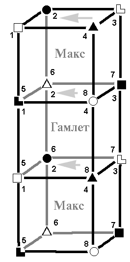

3.8. Дуальные: РПЦ (Макс, ЛСИ) ↔ мораль (Гамлет, ЭИЭ)
|
Нет рабства более позорного, чем рабство духа. Сенека |
Еще одна дуальная пара. Общее описание этого типа отношений сделано в предыдущем параграфе, так что перейдем сразу к конкретике.
1 ↔ 5, БЛ и ЧЭ. База одного воздействует на суггестивную другого. Гамлет воздействует на Макса эмоциями, а тот в свою очередь подталкивает Гамлета на действия путем объяснений правил, как поступать и т.д. Выглядит достаточно похоже: официальная церковь выпускает кучу правил для моралистов (а если добавляется самодеятельность на местах – то вообще доходит до «списков грехов» [50], среди которых, например, «называние бессловесной скотины именами святых угодников – Васька, Машка», «частая стирка белья» и т.д. – всего 475 пунктов), а те ее своими эмоциями также активируют на деятельность наподобие борьбы с ИНН [51]. Хотя данный пример не совсем удачен – церковники сами немало способствовали раздуванию скандала: «[некоторые] церковники сказали, что ИНН – это «число Зверя», а прихожане начали возмущаться наперегонки с РПЦ. Обратите внимание, что подобное взаимодействие вызывает резонанс, раздувая навозных мух до размеров слонов. Причем, даже понимая некорректность поведения паствы (и некоторых священнослужителей), официальные лица от РПЦ пытаются разобраться с ситуацией формально – например, пытаясь показать, что в ИНН и штрих-кодах нет числа «666»; но при этом всячески избегают решения проблемы «на корню», так как не желают рубить сук, на котором удобно сидят и едят с него плоды [52].
Таким образом, в этом случае дуальные отношения не фиксированы, происходит ротация, ко взаимному удовольствию. И, как и следовало ожидать, развития и реальных прогрессивных дел как-то не заметно. Удобная, тихая стагнация со взаимными поглаживаниями и совместным отпором всем, кто решает изменить заплесневелое болото. Как пример можно привести всеразличные «комитеты по биоэтике», в которых гармонично, если можно так выразиться, сочетается эмоциональность высказываний с псевдонаучной аргументацией [53].
2 ↔ 6, БИ и ЧС: творческая действует на референтную. Гамлет обучает Макса своевременности; но с учетом контекста своевременность выражается стремлением к вечности господства своей морали (а где вы видели других моралистов?). Макс же обучает Гамлета – правильно, опять силовым методам по ЧС...
3 ↔ 7, БЭ и ЧЛ. Макс своей ограничительной всегда может одернуть Гамлета, т.е. церковники без проблем могут направлять моралистов в требуемое им русло простым «не то делаете!» (ЧЛ). Вот и получается, что моралисты устраивают демонстрации, скажем, против абортов – под предлогом борьбы за жизнь, а чуть погодя – меняют плакаты и идут на соседнюю улицу протестовать против трансплантаций, которые эту самую жизнь продлевают... Причем сами не видят здесь никакой нелогичности – на их суггестивной крепко сидят указания, навязанные официальной церковью, главное из которых: «Думать самостоятельно – грешно, нужно верить [в первую очередь – нам]». А показать, что он все усвоил по ЧЛ, Гамлету весьма приятно.
Гамлет же может одернуть Макса по БЭ, но дело в том, что здесь Макс олицетворяет цельный административный аппарат, а моралисты – это всегда отдельные группки. И, несмотря на их бурную деятельность, сделать что-либо против системы они попросту не в состоянии: РПЦ вдохновляется на действие по БЭ только тогда, когда это отчетливо ей выгодно. Приведем только два примера: экспроприация детской больницы [54] и прогремевшая на всю страну история с епископом Никоном [55], которую РПЦ усиленно заминала.
4 ↔ 8, ЧИ и БС. Макс не затрагивает больную БС Гамлета. Причем помимо соционического комфорта ситуация усугубляется тем, что официальная церковь стоит на позиции подчинения БС строгим правилам (БЛ), ergo – болевая у ЭИЭ не задевается вообще, вместо этого идет воздействие на суггестивную.
ЧИ Макса также не болит от демонстративной (8) Гамлета, и – в контексте – моралисты осуществляют свои варианты действий (ЧИ) не абы как, а именно в навязанных со стороны официальной церкви рамках по БЛ.
Таким образом, отношения РПЦ/моралисты дуальны при ротации позиций,
направлены на одни и те же ценности (по причинам, не имеющим отношения к
соционике), и по тем же причинам болевая функция у обоих прикрыта еще надежнее,
чем обычно у дуальных пар. Можно сказать, что оба партнера трудятся для одного и
того же, мешая друг другу лишь в отдельных случаях: последнее связано с тем, что
моралисты оглядываются еще и на Христа, а РПЦ давно превратилась в просто
чиновничий аппарат.